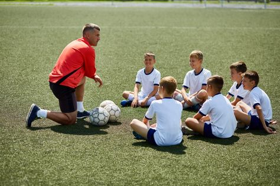
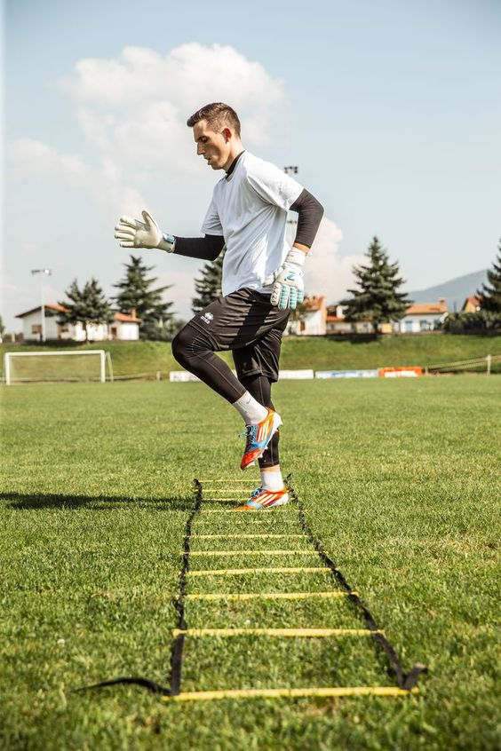
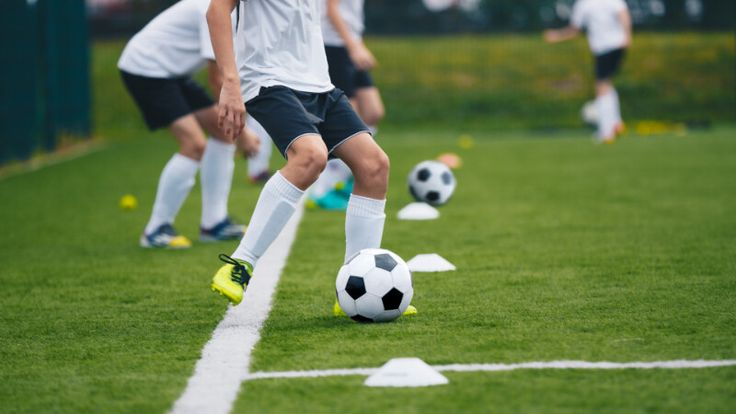
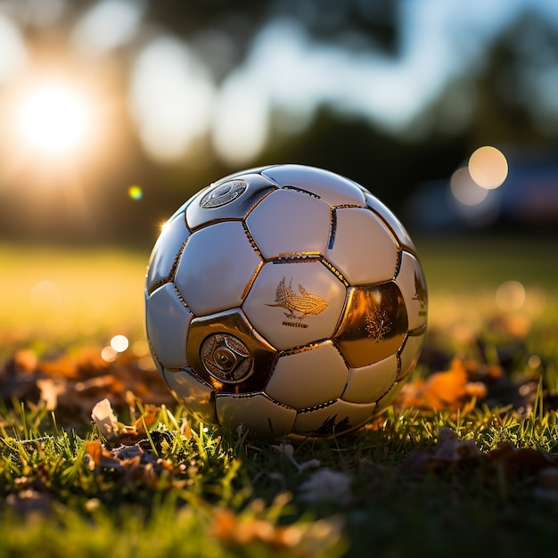

Starting to play football professionally without any prior experience can be challenging, but it's not impossible.
Here are some steps you can take to pursue a career in professional football:

Learn the basics: Start by learning the fundamental skills of football such as dribbling, passing, shooting,
and ball control. You can join a local community team or club to get started.

Get in shape: Football requires a high level of physical fitness. Work on improving your stamina, strength, and agility through regular exercise and training.

Find a coach or mentor: Seek guidance from experienced coaches or players who can provide you with valuable advice and training to improve your skills.
Join a team: Look for opportunities to join amateur or semi-professional teams in your area.
Playing regularly will help you gain experience and exposure.
Attend trials and showcases: Keep an eye out for trials and showcases hosted by professional clubs or football academies.
This can be a chance to showcase your skills and get noticed by scouts.
Stay committed and dedicated: Pursuing a professional football career requires a high level
of commitment and dedication. Stay focused on improving your skills and never give up on your dream.
It's important to remember that the road to a professional football career can be tough and highly competitive.
Keep working hard, stay positive, and be open to feedback and continuous improvement. Good luck on your journey!
